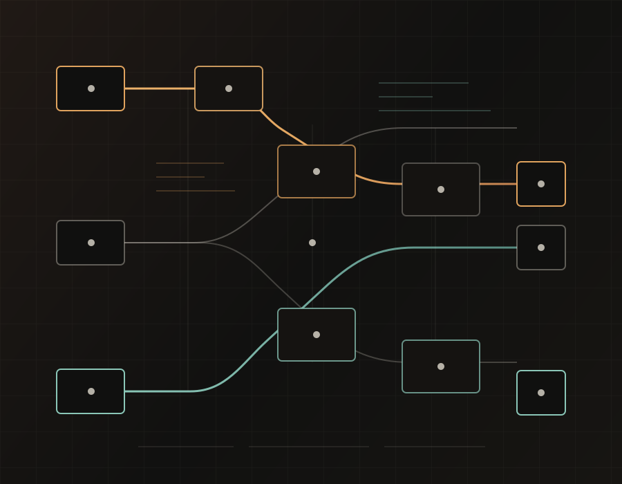

Internal tools and automation
Dashboards, scripts, data checks, admin utilities, and workflow glue your team keeps doing by hand.
Forward-deployed software delivery for product teams
I build practical software around the product: internal tools, API and cloud integration checks, data validation, CI quality gates, and test infrastructure where it actually changes delivery.

Product-adjacent tools, automation, APIs, cloud, and support engineering
Regression and data checks shaped into reusable suites
Release checks designed to run in pipelines and shorten feedback loops
Good fit when the work is too implementation-heavy for a strategy consultant, too cross-functional for a ticket queue, and too urgent to wait for a perfect hire.
01 / Services
Scope stays concrete. The output is working software, tests, documentation, and a hand-off your team can maintain.
Dashboards, scripts, data checks, admin utilities, and workflow glue your team keeps doing by hand.
Playwright, pytest, API suites, and CI/CD checks that give teams earlier release feedback.
REST services, auth flows, access controls, microservice paths, AWS/Azure behavior, and environment validation.
LLMs wired into narrow, useful jobs: test generation, case expansion, review helpers, and documentation drafts.
UI and API automation on Linux/AWS, built to run in pipelines and survive real product change.
SQL, Pandas, ingestion checks, integrity validation, and backend defect isolation before bad data ships.
02 / Engagement models
Join the team for a focused build cycle. Best for founders and product leads who need implementation and feedback fast.
Scope a specific tool, integration, or automation layer. I build it, document it, and leave your team with ownership.
Ongoing support for agencies or teams that need a practical builder across test infrastructure, APIs, scripts, backend support, and release tooling.
Map the bottleneck, inspect the current stack, and separate quick wins from work that deserves deeper investment.
03 / Selected project work
Labels are anonymized; the work is shown by delivery pattern, risk reduced, and hand-off.
Built UI/UX suites in Playwright and Selenium, integrated checks into Jenkins with quality gates, and used LLM-assisted case expansion to cover more flows without turning test authoring into a manual bottleneck.
Built reusable modules for UI regression, access control, and multi-market localization. Validated REST integrations, authentication flows, and role-based access controls across global delivery teams.
Built Playwright and Cypress frameworks on Linux-based AWS infrastructure, used CLI tooling and SSH for server-side investigation, and designed Python/Postman API suites across AWS and Azure services.
04 / Credibility
The quality background is useful because it creates a bias toward observable systems, fast feedback, and fewer surprises after hand-off.
Postman/Newman coverage for payment data, business rules, and REST regression on a financial data platform.
PowerShell and Bash automation for Azure provisioning, permissions, and onboarding workflows.
Systematic debugging and support engineering experience across user-facing and backend problems.
05 / Technical stack
Python, JavaScript, TypeScript, Java, SQL, Bash, PowerShell, C#
Playwright, Cypress, Selenium, pytest, Cucumber, SpecFlow
REST, Postman, Newman, Swagger/OpenAPI, Requests, MySQL, PostgreSQL, Pandas
AWS, Azure, Docker, Linux, Jenkins, GitHub Actions, Azure DevOps, GitLab CI
Jira, Confluence, release triage, story review, risk mapping, stakeholder reporting
LLM-assisted test generation, case expansion, review support, and documentation drafts.
06 / Contact
I will tell you whether it is a scoped audit, a build sprint, or not a fit.